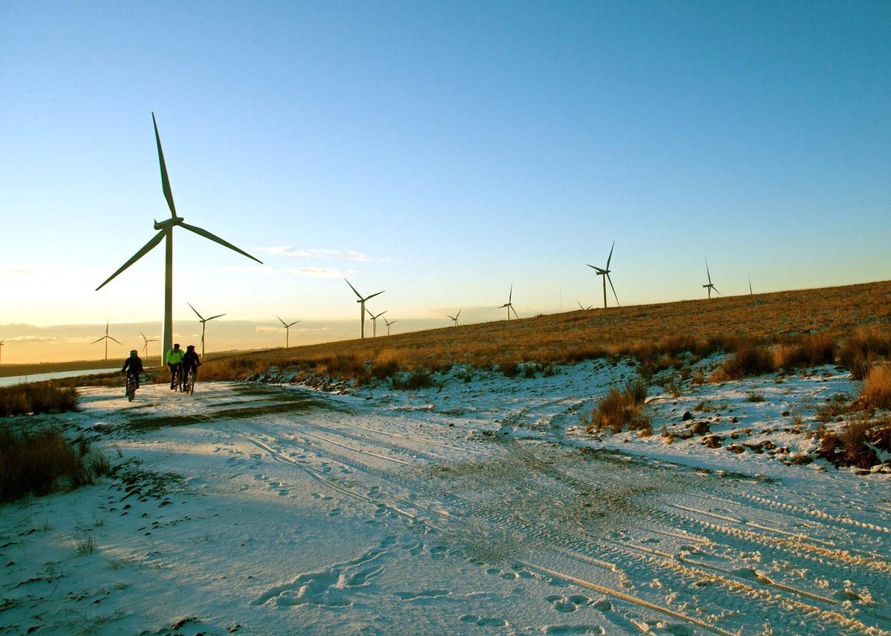

스코틀랜드 노총·환경단체, 육상풍력 105곳 5년 세후이익 28억3,000만 파운드 중 90% 가까이 주주 배당 분석 내놓고 풍력·버스 공공소유 확대 요구

지역경제전략센터(CLES) 분석…버스 공공예산 2019/20년 뒤 72% 늘었지만 이용은 줄어, 공공소유·실행단 신설과 GB에너지 역할 확대 제안…업계는 민간 투자 여전히 필수, 정부는 CARES 예산 1,500만 파운드로 늘렸다고 답해
스코틀랜드노동조합회의(STUC)와 환경단체, 싱크탱크가 재생에너지와 버스의 공공소유를 크게 늘리라고 스코틀랜드 정부에 요구하고 나섰다. 근거는 노조·환경단체 연합 '정의로운 전환 파트너십'의 의뢰로 지역경제전략센터(CLES)가 낸 분석으로, 2019/20~2023/24 다섯 회계연도 동안 스코틀랜드 육상풍력단지 105곳의 공개 회계를 살펴보니 세후이익 28억3,000만 파운드 가운데 90% 가까이가 기업 주주에게 배당됐고, 이 105곳은 스코틀랜드 육상풍력 설치용량의 절반쯤을 차지하며 CLES는 부문 전체로 넓히면 5년 동안 세후이익 56억 파운드, 배당 41억 파운드에 이를 것으로 추정했다. 버스 쪽에서는 정부의 버스·무료승차 예산이 2019/20년 2억7,290만 파운드에서 2025/26년 4억6,820만 파운드(예산액)로 늘었고 2024/25년 버스 회사 총수입 8억9,000만 파운드의 약 56%인 4억9,900만 파운드가 공공 자금이었지만, 연간 이용은 2019/20년 3억6,600만 회에서 2024/25년 3억3,400만 회로 줄었다. 단체들은 공공기관이 에너지·버스·열망·주택 개량 사업을 직접 하도록 돕는 '공공소유·실행단' 신설과 지자체 직영 버스 지원, 영국 정부 공기업 그레이트브리티시에너지(GB에너지)의 발전사업 소유 역할 확대, 주택 단열·난방 개선의 상설 공공 프로그램화를 제안하면서 지자체 4곳이 소유한 로디언 버스와 직영 전환 1년 만에 월 이용객이 약 2,000명에서 1만2,000명 가까이로 늘어난 스코티시보더스 사례를 들었다. 캐럴라인 랜스 스코틀랜드 지구의벗 캠페인 책임자는 "우리가 소유하면 더 잘할 수 있다"고 말했다. 이에 대해 재생에너지 업계단체 스코티시 리뉴어블스는 공공·공동체 소유도 한몫할 수 있지만 발전 자산을 가지려면 큰 자본과 수십 년에 걸친 사업 위험 관리가 필요해 민간 투자는 계속 필수라고 밝혔고, 스코틀랜드 정부는 재생에너지가 입지 지역에 이익을 줘야 한다며 공동체·재생에너지 지원 제도(CARES) 예산을 올해 1,500만 파운드로 늘렸다고 답했다.
시민에너지 관점
육상풍력단지 105곳이 5년 동안 번 세후이익 28억3,000만 파운드 가운데 90% 가까이가 기업 주주에게 갔다는 분석은, 모두의 자원인 바람에서 나온 이익이 지역 밖으로 빠져나간다는 사실을 숫자로 보여 준다. 공공과 시민이 큰 자본과 수십 년의 위험을 감당할 수 있느냐는 반론이 나오지만, 지자체 4곳이 소유한 로디언 버스가 직원 약 2,500명, 한 해 매출 1억7,500만 파운드 이상 규모로 운영되고 독일의 지자체 공기업 슈타트베르케가 지역의 전기와 열을 맡아 온 것처럼 공공·지역 소유도 규모 있게 굴러갈 수 있다. 발전소의 주인이 주민과 지자체여야 배당이 마을의 소득과 자산으로 남고, 발전소를 품은 지역의 에너지 빈곤도 덜 수 있다. 국내 풍력·태양광도 공유자원 개발이익을 주민이 지분으로 나누는 장치와 지자체·시민이 직접 사업을 맡을 수 있는 공공 지원부터 갖춰야 한다.
출처: 더 헤럴드(The Herald) 2026-10-25 마틴 윌리엄스(Martin Williams) 원문 보기
スコットランドの労組・環境団体、陸上風力105カ所の5年間の税引き後利益28億3,000万ポンドのうち9割近くが株主配当との分析を示し、風力・バスの公有化拡大を要求
地域経済戦略センター（CLES）の分析…バスへの公的予算は2019/20年度以降72%増えたが利用は減少、公有化・実行ユニット新設やGBエナジーの役割拡大を提案…業界は民間投資が引き続き不可欠、政府はCARES予算を1,500万ポンドに増額と回答
スコットランド労働組合会議（STUC）と環境団体、シンクタンクが、再生可能エネルギーとバスの公有化を大幅に広げるようスコットランド政府に求めた。根拠は労組・環境団体の連合「公正な移行パートナーシップ」の依頼で地域経済戦略センター（CLES）がまとめた分析で、2019/20～2023/24の5会計年度にスコットランドの陸上風力発電所105カ所の公開決算を調べたところ、税引き後利益28億3,000万ポンドのうち9割近くが企業株主に配当されており、この105カ所はスコットランドの陸上風力設備容量の約半分を占め、CLESは部門全体に広げると5年間で税引き後利益56億ポンド、配当41億ポンドに達すると推計した。バスでは政府のバス・無料乗車予算が2019/20年度の2億7,290万ポンドから2025/26年度の4億6,820万ポンド（予算額）に増え、2024/25年度にはバス会社の総収入8億9,000万ポンドの約56%にあたる4億9,900万ポンドが公的資金だったが、年間利用は2019/20年度の3億6,600万回から2024/25年度の3億3,400万回に減った。団体側は、公的機関がエネルギー・バス・熱供給網・住宅改修の事業を直接担えるよう支える「公有化・実行ユニット」の新設、自治体直営バスへの支援、英国政府の公営企業グレート・ブリティッシュ・エナジー（GBエナジー）による発電事業所有の役割拡大、住宅の断熱・暖房改善の恒常的な公的プログラム化を提案し、自治体4つが所有するロージアン・バスや、直営化から1年で月間利用者が約2,000人から1万2,000人近くに増えたスコティッシュ・ボーダーズの例を挙げた。フレンズ・オブ・ジ・アース・スコットランドのキャロライン・ランス・キャンペーン責任者は「自分たちで所有すればもっとうまくやれる」と述べた。これに対し再エネ業界団体スコティッシュ・リニューアブルズは、公的・地域所有も一定の役割を果たせるが、発電資産の所有には大きな資本と数十年にわたる事業リスク管理が必要で民間投資は引き続き不可欠だとし、スコットランド政府は再エネが立地地域に利益をもたらすべきだとして、地域・再エネ支援制度（CARES）の予算を今年1,500万ポンドに増やしたと答えた。
市民エネルギーの視点
陸上風力発電所105カ所が5年間に得た税引き後利益28億3,000万ポンドのうち9割近くが企業株主に渡ったという分析は、みんなの資源である風から生まれた利益が地域の外へ流れ出ていることを数字で示している。公共や市民が大きな資本と数十年のリスクを担えるのかという反論もあるが、自治体4つが所有するロージアン・バスが従業員約2,500人、年間売上高1億7,500万ポンド超の規模で運営され、ドイツの自治体公営企業シュタットベルケが地域の電気と熱を担ってきたように、公的・地域所有も規模をもって回りうる。発電所の持ち主が住民と自治体であってこそ配当が地域の所得と資産として残り、発電所を受け入れた地域のエネルギー貧困も和らげられる。韓国の風力・太陽光でも、共有資源の開発利益を住民が持ち分として分け合う仕組みと、自治体・市民が自ら事業を担えるよう支える公的支援をまず整えるべきだ。
出典: ザ・ヘラルド（The Herald） 2026-10-25 マーティン・ウィリアムズ（Martin Williams） 原文を読む
苏格兰工会与环保团体发布分析称陆上风电场105座5年税后利润28.3亿英镑近九成分给股东，要求扩大风电和公交公有制
地方经济战略中心（CLES）分析…公交公共预算自2019/20年度以来增长72%但客流减少，建议新设公有制与实施机构、扩大GB能源作用…业界称民间投资仍不可或缺，政府回应已将CARES预算增至1,500万英镑
苏格兰工会大会（STUC）与环保团体、智库要求苏格兰政府大幅扩大可再生能源和公交的公有制。依据是地方经济战略中心（CLES）受工会和环保团体联盟"公正转型伙伴关系"委托完成的分析：在2019/20至2023/24五个会计年度，苏格兰105座陆上风电场的公开账目显示，税后利润28.3亿英镑中近九成作为股息分给了企业股东；这105座风电场约占苏格兰陆上风电装机容量的一半，CLES估计若扩大到整个行业，5年间税后利润达56亿英镑、股息达41亿英镑。公交方面，政府的公交与免费乘车预算从2019/20年度的2.729亿英镑增至2025/26年度的4.682亿英镑（预算数），2024/25年度公交公司总收入8.9亿英镑中约56%即4.99亿英镑来自公共资金，但年客运量从2019/20年度的3.66亿人次降至2024/25年度的3.34亿人次。这些团体建议新设"公有制与实施机构"，帮助公共机构直接开展能源、公交、热网和住房改造业务，并支持地方政府直营公交、扩大英国国有企业大不列颠能源公司（GB能源）持有发电项目的作用、把住房保温和供暖改造变成常设公共项目；他们举出由4个地方政府所有的洛锡安公交，以及转为直营一年后月客流从约2,000人次增至近1.2万人次的苏格兰边区为例。苏格兰地球之友运动负责人Caroline Rance说："我们自己拥有，就能做得更好。"对此，可再生能源行业团体苏格兰可再生能源协会表示，公共和社区所有可以发挥一定作用，但持有发电资产需要大量资本和数十年的商业风险管理，民间投资仍不可或缺；苏格兰政府则表示可再生能源应惠及所在社区，并称今年已将社区与可再生能源扶持计划（CARES）预算增至1,500万英镑。
市民能源视角
105座陆上风电场5年税后利润28.3亿英镑中近九成流向企业股东，这一分析用数字说明，来自风这一公共资源的利益正在流出当地。有人质疑公共部门和市民能否承担巨额资本和数十年的风险，但由4个地方政府所有的洛锡安公交以约2,500名员工、年营收超过1.75亿英镑的规模运营，德国的市政公用企业（Stadtwerke）长期承担当地的电力和供热，说明公共和地方所有同样可以形成规模。只有让居民和地方政府成为电站的主人，股息才能作为当地的收入和资产留下来，也才能缓解电站所在地区的能源贫困。韩国的风电和光伏也应首先建立让居民以股份分享公共资源开发收益的机制，以及支持地方政府和市民直接经营项目的公共扶持。
来源: 先驱报（The Herald） 2026-10-25 Martin Williams 查看原文
Scottish unions and green groups say nearly 90% of £2.83 billion in five-year post-tax profits at 105 onshore wind farms went to shareholders, and call for more public ownership of wind and buses
Analysis by the Centre for Local Economic Strategies (CLES); public bus funding up 72% since 2019/20 while journeys fell; proposals include a Public Ownership and Delivery Unit and a bigger role for GB Energy; industry says private investment remains essential, government points to £15 million for CARES
The Scottish Trades Union Congress (STUC), environmental groups and a think tank have urged the Scottish Government to greatly expand public ownership of renewable energy and bus services. Their case rests on an analysis by the Centre for Local Economic Strategies (CLES), commissioned by the Just Transition Partnership of unions and environmental groups: published accounts of 105 Scottish onshore wind farms over the five financial years from 2019/20 to 2023/24 show £2.83 billion in post-tax profits, almost 90% of it paid as dividends to corporate shareholders; the 105 farms make up about half of Scotland's installed onshore wind capacity, and CLES estimates the whole sector made £5.6 billion in post-tax profits and paid £4.1 billion in dividends over the five years. On buses, the government's budget for bus services and concessionary travel rose from £272.9 million in 2019/20 to £468.2 million in 2025/26 (a budget figure), and in 2024/25 public money made up £499 million, about 56%, of operators' £890 million total revenue, yet annual journeys fell from 366 million in 2019/20 to 334 million in 2024/25. The groups propose a new Public Ownership and Delivery Unit to help public bodies run energy, bus, heat network and home improvement services directly, support for council-run buses, a stronger project-owning role for the publicly owned Great British Energy (GB Energy), and a permanent public programme for home insulation and heating upgrades, citing Lothian Buses, owned by four councils, and the Scottish Borders, where monthly passengers rose from about 2,000 to nearly 12,000 within a year of services being taken in-house. Caroline Rance, head of campaigns at Friends of the Earth Scotland, said "we can do it better if we own it." Industry body Scottish Renewables said public and community ownership can play a part but owning energy assets takes substantial capital and decades of commercial risk management, so private investment remains essential, while the Scottish Government said renewables should benefit host communities and that it has raised funding for its Community and Renewable Energy Scheme (CARES) to £15 million this year.
Citizen Energy View
The finding that nearly 90% of the £2.83 billion in post-tax profits earned by 105 onshore wind farms over five years went to corporate shareholders puts a number on how the value of the wind, a shared resource, flows out of the places that host it. Some will ask whether the public sector and citizens can carry large capital costs and decades of risk, but Lothian Buses, owned by four councils, runs with about 2,500 staff and more than £175 million in annual revenue, and Germany's municipal utilities, the Stadtwerke, have long supplied local electricity and heat, showing that public and local ownership can work at scale. Only when residents and councils own the plants do dividends stay in the community as income and assets, and only then can host areas ease their own energy poverty. Korea's wind and solar build-out should start with mechanisms that give residents an equity share in the gains from shared resources, and public support that lets councils and citizens run projects themselves.
Source: The Herald 2026-10-25 Martin Williams Read the original